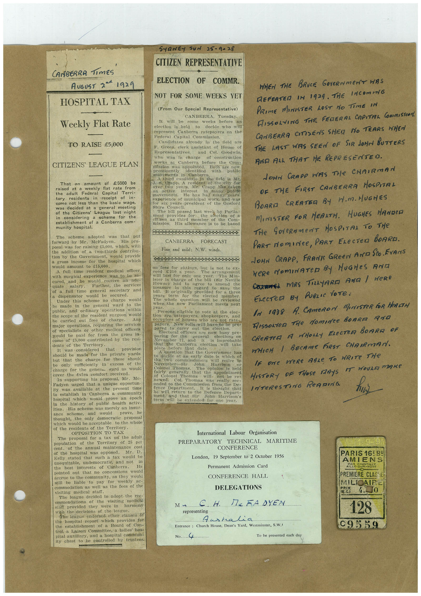

Book 1 · scan 014


Description
Transcription
Context
Review notes
Compare the machine draft with the scan. Handwriting and names need human review.
Artifacts
Edit the artifacts field in this note’s frontmatter to change these records. This summary is generated.
B01-S014-A01 — Newspaper clipping, Typed document & Handwritten note — Book 1, scan 014
Types: Newspaper clipping, Typed document, Handwritten note
Scope: Whole scanned page; individual items can be split out during review.
Caption: Not mapped yet.
Caption source: Not recorded yet.
Caption status: unmapped
Machine transcription
CANBERRA TIMES AUGUST 2d1929 HOSPITAL TAX Weekly Flat Rate TO RAISE €5,000 CITIZENS' LEAGUE PLAN That an amount of t5000 be raised at a weekly flat rate from the adult Federal Capital Terri- tory residents in receipt of in- come not less than the basic wage, was decided at a general meeting of the Citizens League last night in considering a scheme tor the establishment of a Canberra com- munity hospital. The scheme adopted was that put forward by Mr. McFadyen. posal was for raising 15,000, which, with the addition of a two-thirds contribu- tion by the Government, would provide a gross income for the hospital which would amount to t15,000. A full time resident medical officer. with surgical experience was to be se- cured, and he would receive an ade- Further, the services of a full time general secretary and a dispensator would be secured. Under this scheme no charge would be made in the general ward to the public, and ordinary operations within the scope of the resident surgeon would carried out free of charge. Any major operations, requiring the services of specialists or other medical officers would be paid for from the gross in- come of t5,000 contributed by the resi- dents of the Territory. It was considered that provision should be made for the private wards but that the charge for these should be only sufficiently in excess of the charge for the genera. vard as would cover the exira comfort received. In supporting his proposal, Mr. Me- Fadyen urged that a unique opportun- ity was available at the present time to establish in Canberra a community hospital which would prove an epoch the history of public health activ- ities. His scheme was merely an insur- ance scheme, and would prove, he thought, the only democratic proposal which would be acceptable to the whole of the residents of the Territory. OPPOSITION TO TAX The proposal for a tax on the adult population of the Territory of 25 per cent. of the annual maintenance cost of the hospital was opposed. Mr. D. Kelly stated that such a tax would be unequitable, undemocratic, and not in the best interests of Canberra. He pointed out that no concessions would accrue to the community, as they would still be liable to pay for weekly commodation as well as the fees of the visiting medical staff. The league decided to adopt the rec- ommendations of the visiting medica! staff provided they were in harmony with the decisions of the league. The league endorsed other clauses 6t the hospital report which provides for the establishment of a Beard of Con- trol, a Laison Committee, a ladies' hos- pital auxiliary, and a hospital commun- ity chest to be controlled by trustees. SHANE- SUN 25-9-28 CITIZEN REPRESENTATIVE ELECTION OF COMMR. NOT FOR SOME WEEKS YET (From Our Special Representative) CANBERRA. Tuesday. It will be some weeks before an election is held to decide who will represent Canberra ratepayers on the Federal Capital Commission. Candidates already in the field are I. Green, clerk assistant of House of Representatives. and Col. Goodwin, who was in charge of construction works at Canberra before the Com- mission was appomted. Both are now prominently identified movements in with public Canberra. candidate in the field is Mr. J. s. Crapp. A resident of the city for over two years. Mr. Crapp has taken newest movements. in many pubtie He has had many years experience of municipal work, and was tot six years president or the Gostord Shire Council. The bill passed last week by Parlia- pent the election of a citizen as third of the Com- mission. His allowance is to be based ... CANBERRA FORECAST Fine and mild; N.W. winds. in fees for sittings, but is not to ex € 250 year. See in dare of no bi (sli 'he arrangemen Howse) had agree to Neville amend measure in this See de save the It originally provided for a three y calls term for the elected member. The whole question will be reviewed when the new Parliament meets next year. Persons eligible to vote at the elec- Gon are calepavers, snookeeper's and occupiers of houses who are not rate- payers. New rolls will have to be pre- pared to carry out the election. Electoral officers are now paring for the general busy pre- is improbable that the Canberra election will take place before that ace bestion that det Goveroment has to decide at an early date is which of the commissioners will retire in November- Harrison Colonel nomas The opinion is held generally that appointment of Colonel will 300PP- Thomas was really sec- onded to the Commission from the De- Department. It is thought moat Ten te Dream tot the De thee Depthat ment and that sir Harrison's term will be extended for one year. WHEN THE BRUCE GOVERNmENT WAS DEFEATED IN 1929. THE INCOmING PRIME MINISTER LOST NO TIME IN FISSORVING THE FEDERAL CAPITAL COmMISSIOn CAMBERRA CITISENS SHED NO TEARS WHEN THE LAST WAS SEEN OF SIR JONA BUTTERS AND ALL THAT HE REPRESENTED. JOHN CRAPO WAS THe CHAIRMAN OF THE FIRST CANBERRA MOSPITAL BOARD CRERTER BY N.M. HUGHES MINISTER FOR MEANTH. HUGHES HANDeD THe GOVeRNMeNT NOSPITAL TO THe PART NOmINCe, PART ELECTeR BOARD. JOHN CRAPP, FRANTI GReeN AND SCO. EVANS WERE NOmINATED By HUGHeS AND CaRreL MRS TiLLyARD AND / WeRe ELecTer By PuBLIc VoTe. IN 1938 A. CAmeRON MUrISTeR FOR HeACTA HIssorteD THe Nomite BORRA ANO CREATER A MHOLLY ELECTER BOTRA OF WHICH / BECAMe FIRST CHAIRMAN. IF one WeRe ABLe TO WRITe THe HISTORY DE THOSE TARYS IT WOULD mAMe INTeRESTING ReADING International Labour Organisation PREPARATORY TECHNICAL MARITIME CONFERENCE London, 19 September to 2 October 1956 Permanent Admission Card CONFERENCE HALL DELEGATIONS M - CH. MCFADYEN representing Aushalia Entrance: Church House, Dean's Yard, Westminster, S.W.I No. 4 To be presented each day PARIS 16F BU AMIENS PREMIERE CLASSE MILIOIP E CR. 4.- 128 09559